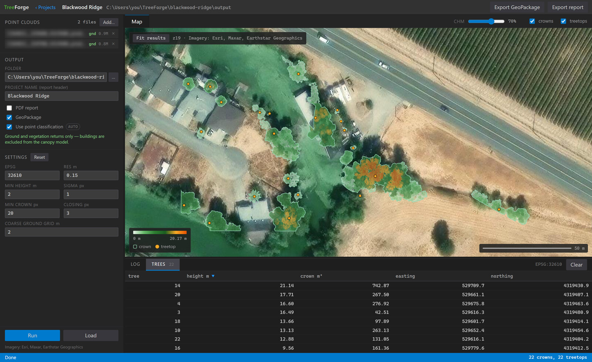
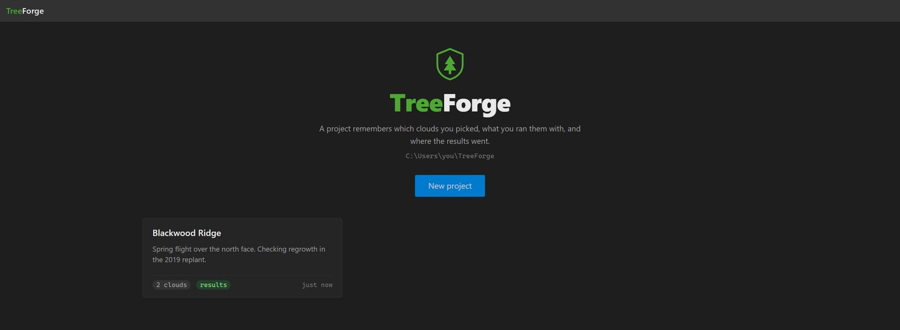
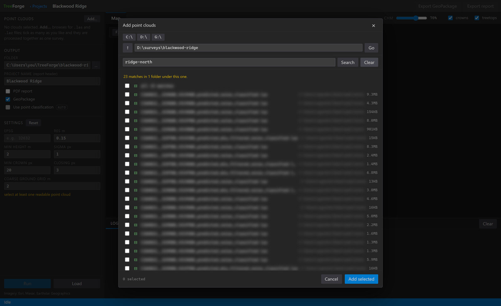
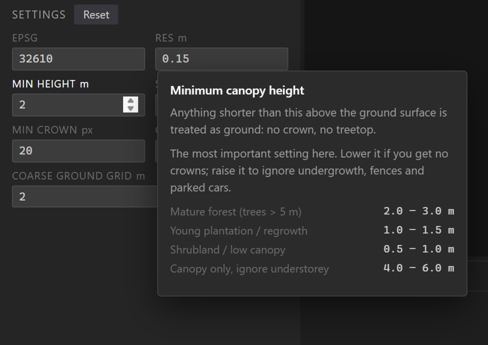

TreeForge
A forestry toolkit that turns drone-acquired point clouds into a complete inventory: surface and terrain models, a canopy height model, individual tree crown polygons, treetop locations, a GeoPackage and a two-page PDF report. It runs as a local browser application or as a command line tool, and it works with both real LiDAR and photogrammetry clouds from OpenDroneMap, Metashape, Pix4D or DJI Terra.
Public beta, with a test suite that runs against real point clouds
The interface
The original release was command line only, which meant the people it was built for could not use it. It now ships a browser UI: a local server on 127.0.0.1 serving one HTML page, one stylesheet and one script, with no build step and no framework. Results land on an aerial basemap with the canopy height model blended over it, crown polygons drawn on top, and a treetop marker per tree. Click any crown for its height, area and position, or work through the sortable Trees tab and fly to each one.
There is no mapping library. The pane is a canvas renderer written for the job, drawing cached aerial tiles, a warped canopy raster and the vector overlays itself, which keeps the whole client at one script and no dependency to keep current.

Projects
Work is organised into projects. A project remembers which clouds were picked, the EPSG and tuning they were run with, and where the results went, so reopening one puts you back where you left off. Point clouds are referenced rather than copied, because survey data runs to gigabytes and usually lives on a different drive.

Finding the clouds
A survey delivery is usually a nested folder of hundreds of tiles. The picker searches everything beneath the current folder by name, so collecting twenty tiles out of a delivery is one search rather than a descent through the tree. Each cloud is probed as it is added: point count, extent, density, whether it carries ground-classified points, and the EPSG from its header. When the clouds agree on a CRS, the EPSG field fills itself in.

Settings that explain themselves
Every parameter has a card on hover explaining what it does, which way to move it, and the recommended range for the forest type, worked out against the values currently set. The target user is a surveyor or an estate manager, not a GIS analyst, so the tool has to teach its own parameters rather than assume them.

Processing pipeline
- GeoTIFF
- GeoJSON
- GeoPackage
- PDF report
Excluding buildings
A canopy height model built from every return treats a roof exactly like a crown, because both are simply tall, and no tuning parameter separates them afterwards. Where the clouds carry vegetation classes, TreeForge builds the surface model from ground and vegetation returns only, so buildings never enter the canopy model at all. It detects this and turns itself on.
Measured on a classified survey tile over a residential edge, which is the case it exists for:
| Surface built from | Crowns found | Area called canopy | Canopy cells actually vegetated |
|---|---|---|---|
| Every return | 33 | 11.1% | 62.3% |
| Ground and vegetation only | 30 | 6.9% | 100.0% |
The three crowns that disappear are buildings. Raising the minimum height threshold is the only alternative and it is a poor one: on the same data it takes building contamination from 15.2% down to 6.7%, never to zero, and it discards genuine short trees on the way.
Usage
On Windows, double-clicking start.bat finds Python, builds a virtual environment, installs everything on first run and opens the UI. From a terminal, or for scripting and batch work:
# Browser UI treeforge-ui # Command line, full analysis with PDF report treeforge --input /data/flight_laz --out /data/results --res 0.15 --srid 32632 --report --gpkg
Pipeline outputs
| Stage | What it produces | Format |
|---|---|---|
| DSM | Highest return per cell, capturing treetops and structures | GeoTIFF |
| DTM | Ground surface, 5th percentile of ground points, gap-filled | GeoTIFF |
| CHM | DSM minus DTM, so every pixel is a canopy height above ground | GeoTIFF |
| Crown polygons | Individual tree crown boundaries with area per crown | GeoJSON |
| Treetops | Point per tree with height and crown ID, one peak per crown | GeoJSON |
| Combined vectors | Crowns and treetops as two layers QGIS opens by double-click | GeoPackage |
| Report | CHM map, crown outlines, figures, height histogram, top 15 trees |
Key capabilities
- No GDAL, nothing to compile
- The GeoJSON and GeoPackage writers were rewritten to emit the formats directly, the GeoPackage as SQLite. That removed fiona, the one dependency without a binary wheel, so a plain
pip installnow works on a laptop with no build tools on it. - Auto ground estimation
- A lightweight coarse-grid filter estimates ground points in unclassified photogrammetry clouds, so clouds with no ground classification still process without preprocessing or external tools.
- Classification aware
- Where vegetation classes are present the canopy model is built from ground and vegetation returns only. The UI shows what will actually happen rather than what is stored, and says so per selection.
- Crown segmentation
- Deterministic height thresholding replaces brittle Otsu methods. Morphological closing bridges intra-crown gaps, and connected-component labelling extracts individual crowns.
- Treetop detection
- A local maximum filter finds one peak per crown. Two-stage Gaussian blur separates noise filtering from peak localisation, so treetop heights come from the raw CHM rather than smoothed data.
- Exports after the fact
- The GeoPackage and the PDF rebuild from whatever is already in the output folder, so you can decide you want a report once you have seen the crowns, without re-running anything.
- Vectorised throughout
- No Python loops over points. DSM uses
np.maximum.at(), DTM useslexsort()for the 5th percentile per cell, and gap filling uses a Euclidean distance transform, so it scales to millions of points. - Nothing leaves the machine
- The server binds to 127.0.0.1 and reads point clouds off disk directly. The aerial basemap is the only thing that touches the network, and its tiles are cached locally.
Tested
Four check scripts rather than a unit test suite, because the interesting ones need real point clouds: the vector writers against the format specs and against GDAL where it is available, a full pipeline run verifying that the rasters share a grid and every treetop sits inside its own crown at the height under it, every server endpoint including project create, save, reopen and delete, and the page itself driven end to end in a real browser through Playwright, failing on any uncaught JavaScript error.
Why I built it
Professional forestry analysis tools such as Trimble, ESRI and Global Mapper are expensive, demand specialist hardware, and require significant GIS expertise. TreeForge was built to lower that barrier: a surveyor with a consumer drone and a laptop should be able to fly a site, run OpenDroneMap on the images, and get a professional tree inventory report in an afternoon.
The target user is not a GIS analyst. It is a small agricultural consultancy, a forest estate manager, a conservation organisation, or an independent surveyor who needs a repeatable, documented workflow they can hand to a client. That is also why the command line version was not enough on its own, and why the install had to stop requiring a compiler.
Potential use cases
- Private forest inventory. Tree count, stem density, crown area and height distribution for timber valuation or management planning.
- Carbon credit applications. Height and crown area used to approximate above-ground biomass for voluntary carbon markets.
- Municipal tree surveys. Parks departments tracking canopy cover change over time.
- Post-disturbance assessment. Canopy loss monitoring after storm damage, fire or pest outbreak by comparing surveys.
- Reforestation monitoring. Tracking crown development in plantation areas year on year.
Built with
- Python 3.10+
- NumPy
- SciPy
- rasterio
- laspy
- scikit-image
- Shapely
- pyproj
- matplotlib
- FastAPI
- uvicorn
- Playwright
- Vanilla JS, no framework
- Canvas 2D
- SQLite / GeoPackage
- LAS / LAZ
- GeoTIFF
- GeoJSON
- OpenDroneMap